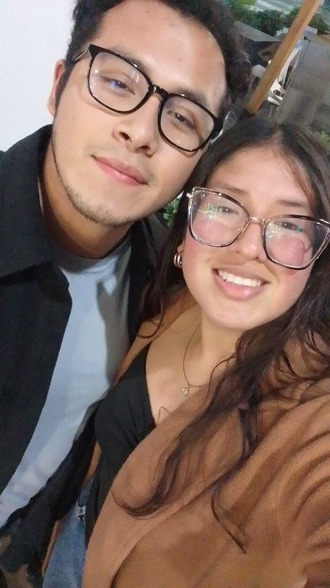
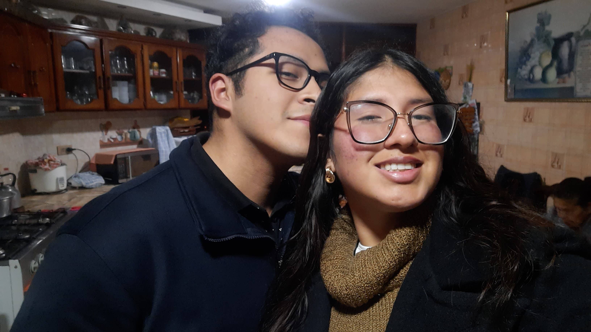
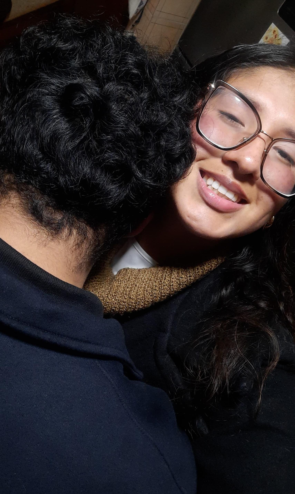

Mi amor, me duele tanto lo que pasó… nunca fue mi intención hacerte sentir humillada ni menospreciada. Cuando tu tío habló, me quedé en shock, sin saber cómo reaccionar, pero no porque esté de acuerdo ni porque piense mal de ti. Todo lo contrario: tú eres para mí una mujer maravillosa, valiente, que lo da todo y no merece jamás ser señalada. Si me quedé callado fue por torpeza, no por indiferencia. Y me duele pensar que sentiste que no estuve a tu lado. Perdóname si mi silencio te lastimó. Estoy aquí, quiero aprender de esto, quiero hacerlo mejor y que sepas que jamás te voy a faltar el respeto. Yo te admiro y te amo profundamente, y no dejaré que una herida quede abierta entre nosotros. Tú mereces amor limpio, sincero… y ese es el que quiero darte.

Amor, no sabes cuánto me duele que hayas sentido que no te defendí. Me quedé callado, y fue un error. No porque no te valore, sino porque me bloqueé. Pero hoy te digo, con toda el alma: eres una mujer increíble, y nadie tiene derecho a señalarte. Me fallé a mí mismo al no reaccionar, pero no volveré a quedarme en silencio cuando se trate de ti. Estoy contigo. Te amo y te respeto más que nunca.

Mi vida, quisiera retroceder el tiempo y no quedarme callado. Me sentí mal, incómodo, confundido… pero no supe qué hacer. Ahora entiendo cómo te sentiste, y no puedo dejar de pensar en eso. Me importas demasiado como para dejar que algo así se interponga entre nosotros. Hoy quiero abrazarte, mirarte a los ojos y decirte: lo que dijeron no define quién eres, pero mi amor sí quiere demostrarte todo lo que vales. ❤